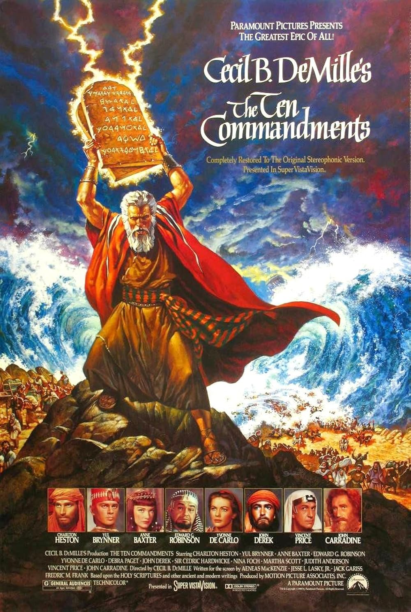

The Ten Commandments
29th Academy Awards
(Oscars 1957)
7 Nominations, 1 Award
| Nominations | ||
|---|---|---|
| Category | Nominees | Result |
| Best Motion Picture | Cecil B. DeMille | Nominated |
| Cinematography (Color) | Loyal Griggs | Nominated |
| Film Editing | Anne Bauchens | Nominated |
| Art Direction (Color) | Albert Nozaki, Hal Pereira, Ray Moyer, Samuel M. Comer, and Walter H. Tyler | Nominated |
| Costume Design (Color) | Arnold Friberg, Dorothy Jeakins, Edith Head, John Jensen, and Ralph Jester | Nominated |
| Special Effects | John Fulton | Won |
| Sound Recording | Loren L. Ryder | Nominated |